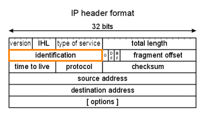
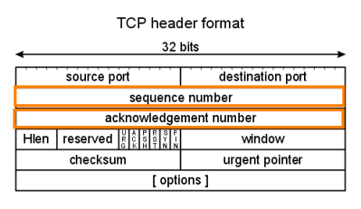

Covert Channel in TCP and Ip Headers
Instead of embed embed one protocol entirely in a
different protocol, covert channels can also be constructed by inserting data into unused or misused fields of
protocol headers themselves.
The TCP/IP protocol is particularly useful in carrying covert channels,
because many of the fields in the TCP and IP headers remain unused
Covert_TCP (old
tool)Covert__TCP offers the ability to carry ASCII data in these fields:
◇ IP
Identlfication
◇ Sequence Number
◇ Acknowledgment Number
An attacker can load information into these fields and use it to
transmit the data across the network using TCP.
Of course, other components of the TCP and IP headers (or even
UDP headers for that matter) could be used to
transmit data, such as the reserved, window, code-bits, options,
or pudding fields, but only these three options are
supported by Covert_TCP tool. These options were selected
by the original creator of the tool because
they are often left unaltered
as packets traverse a network.